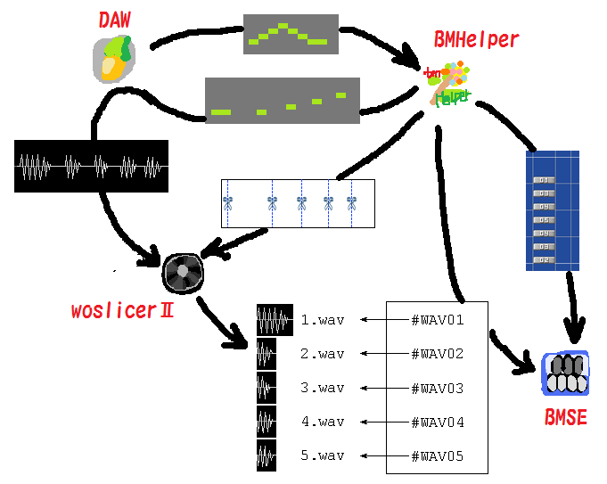

Be-Music Helper (beta 4′)
ダウンロード
BMS制作における音切り前後の補助ツールです。※このソフト自体は音切りできません。
音切り前にノートを離して配置し直したり、音切り後にBMSファイルに配置する作業をある程度自動的に行うことができます。
woslicerII・BMSEとの連携を前提としているので、あらかじめこれらのソフトを導入しておくことをお勧めします。
最近の変更点
(beta 4′)
- beta 4がXPでは動かなかったようなので、動くようにしました。beta 3以前が動作する環境なら大丈夫なはずです。
(beta 4)
- 一部のMIDIファイル(Singer Song Writerで書き出したものなど)が読み込めなかったのを修正(Master/223-0Pさんありがとうございます)
- 定義開始番号を後から変更可能にした
- 定義情報ウィンドウを少し使いやすくした
- 分割設定のデフォルト値を少し変更(容量を節約する方向に)
SONARでMIDIファイルの出力方法がわからない/BMHelperで読み込めない場合
MIDIデータを一旦Music Studio Producer(MSP)というソフトに読み込ませてMIDIファイル出力するといいそうです。
SONARを持っていないので詳しいことがわからなくてすみません。
紹介・実演動画
